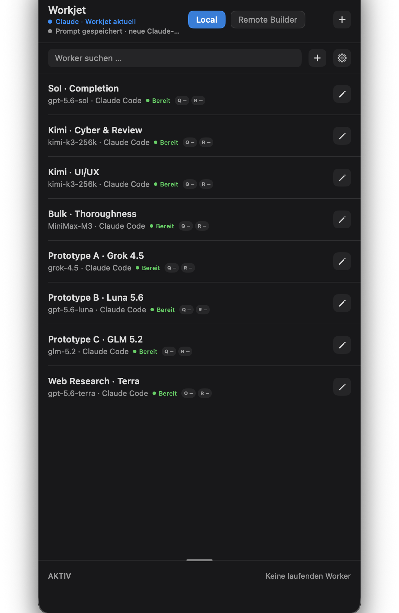
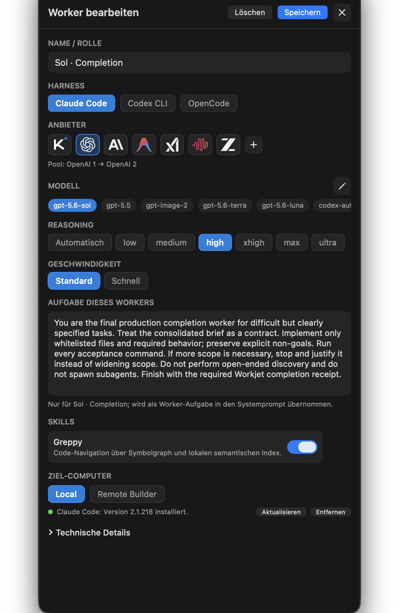
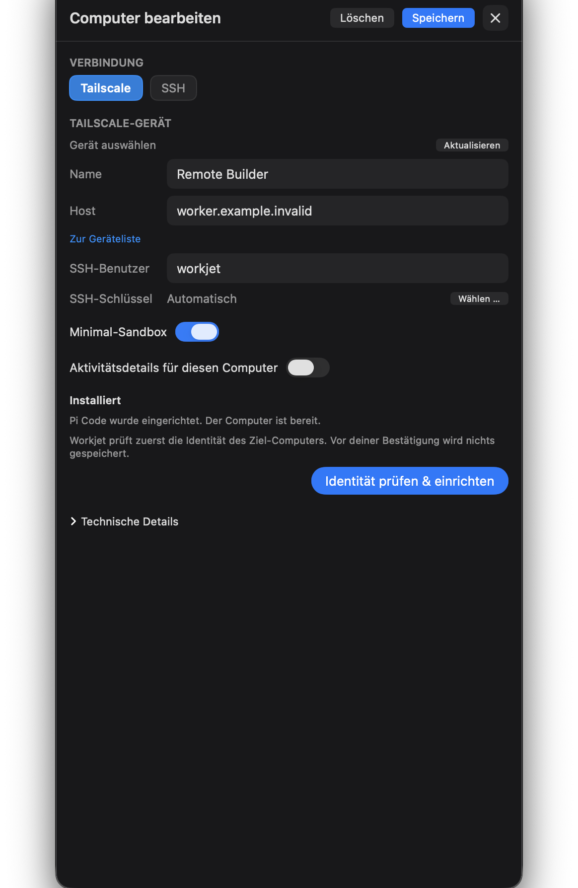
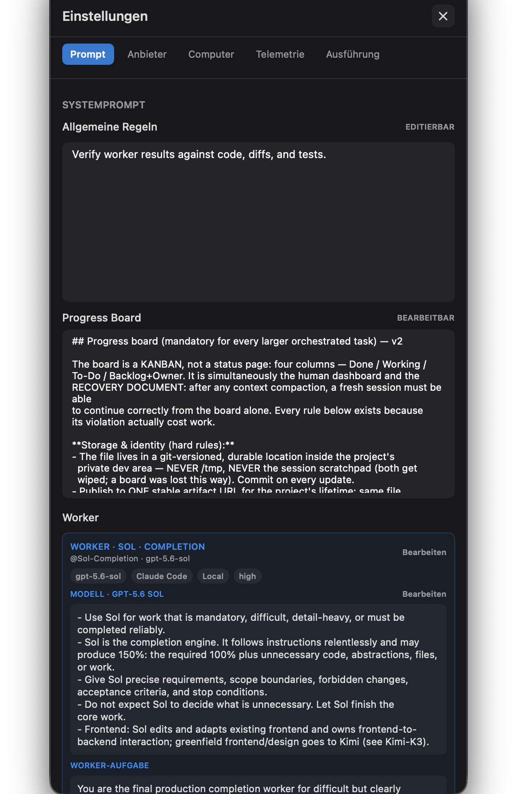

Route every worker.
Workjet defines specialized workers across local and remote computers. The orchestrator chooses the work. Workjet keeps prompts, providers, target health, and run evidence in view.
- macOS 14+
- Apple Silicon
- Open source
Release candidate in verification. No public download is claimed yet.

Turn an unclear task into a bounded run.
The calling agent remains the sole orchestrator. Workjet gives it declared workers, live target facts, and a durable evidence trail without taking over task planning.
-
01
Name the unknowns
The orchestrator reads the request, states the product boundary, and splits discovery by question rather than by file.
-
02
Run A / B / C discovery in parallel
A Code and dependency facts
B Product and UX constraints
C Failure modes and checks
-
03
Consolidate one production brief
The brief fixes scope, allowed paths, exact checks, and a stop condition before a final worker starts.
-
04
Route by declared role
Sol takes hard implementation work. Kimi takes greenfield frontend work. The worker runs fire-and-forget, with no mid-run steering.
-
05
Verify apart from the worker claim
The orchestrator inspects code and diffs, enforces the path boundary, and reruns checks. A completion receipt is evidence to examine, not proof.
Configuration stays close to runtime truth.
The app exposes the sources that shape worker behavior, then keeps measured state distinct from unknown or unavailable state.

Define the role once.
Name the worker, provider route, model, harness, target computer, and owned instructions. Shared model rules keep one source.
Greppy is managed centrally and starts on only for supported coding harnesses. Workjet checks the exact target before prompt injection and keeps it off for the online-research worker.

See the target before assigning work.
Local and remote computers are peer choices. Offline, unsupported, and unverified states remain explicit instead of becoming false readiness.

Audit policy and observation separately.
General rules, model rules, worker instructions, learnings, and technical rules keep named owners. Runtime telemetry records what was observed.
Move the workspace, not your repository credentials.
Remote shell workers receive an immutable Git bundle over the existing strictly host-key-verified SSH and Tailscale path. Each run gets a host-owned detached worktree.
The remote computer does not clone or fetch from origin. It needs no GitHub login, origin access, repository credential, or SSH agent forwarding.
-
01
Confirm the host
Unknown or changed SSH host keys block setup. Trust is explicit.
-
02
Send a fixed snapshot
Tracked edits, deletions, and allowed untracked files travel as a capped raw Git bundle.
-
03
Run in host-owned space
The host creates one detached worktree and performs no network Git operation.
-
04
Import only after review
A result import writes only
refs/workjet/<run-id>. It does not check out, merge, rebase, stage, move HEAD, or touch the real worktree.
Start from a clean checkout.
A notarized public release is not available yet. Source installation builds a local ad-hoc-signed app and requires the Xcode command line tools plus rsvg-convert from librsvg.
git clone https://github.com/metric-space-ai/claude-workjet /tmp/claude-workjet
cd /tmp/claude-workjet
brew install librsvg
./install.shWhat the installer owns
It installs the app and CLI, manages one marked include in the global Claude prompt, and preserves unrelated global content. Project-local prompt files are not changed.
Read the full installation guideSupported boundary
| Area | Supported | Not claimed |
|---|---|---|
| Control host | macOS 14+ on Apple Silicon | Hosted service or web control plane |
| Orchestration | The calling agent chooses declared workers | Workjet planning or choosing tasks |
| Targets | Local Mac and configured Linux hosts over SSH or Tailscale | Credential sharing with remote hosts |
| Run model | Fire-and-forget workers with observed completion data | Live steering or worker claims as proof |
| Distribution | Source checkout today | Public notarized download today |
Inspect the project. Follow the release candidate.
Workjet is open source and under release verification. Use the source and docs now, or check the releases page for a future notarized artifact.